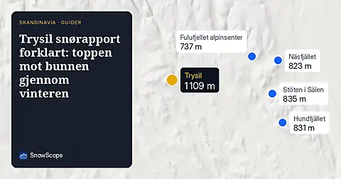
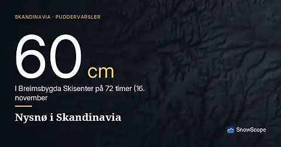
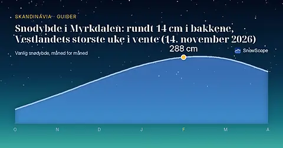
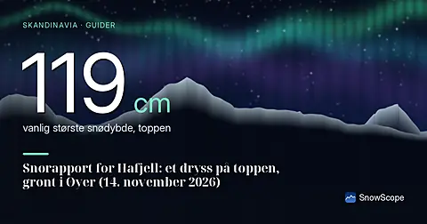

Snørapporter · november 2026
Daglige snørapporter for skiløpere: hvor snøen ligger, hva som kommer og hvor du kan kjøre, fra SnowScopes snøkart og målestasjoner. Hvert tall kommer fra dagens data.

Hafjell ovenfor Lillehammer måned for måned: vanlig snødybde nederst, midt på fjellet og på toppen fra 46 tidligere vintre, første snøfall, de dypeste ukene og hvordan de siste vintrene ligger an.
Kvitfjell, OL-utforbakken nord for Lillehammer: vanlig snødybde nederst, midt på og på toppen måned for måned fra 46 tidligere vintre, de sikre ukene og våren.

Hvorfor snørapporten fra Trysil viser to svært ulike tall: vanlig dybde nederst, midt på og på toppen av Trysilfjellet fra 46 tidligere vintre, måned for måned.


Nysnø fra en tre-dagers storm nådde toppen på 76 cm i Jotunheimen og 74 cm i Hardangervidda, Norges høyfjell, 16. november.

Til tross for 60 cm nysnø på 72 timer, ligger Skandinavias snødybde i midten av november langt under gjennomsnittet per 16. november.

Riksgränsen dominerer Skandinavia med 173 cm snødybde målt 16. november, og holder betydelig mer fjellvann enn noe annet skisenter i regionen.

Snøforhold i Narvikfjellet i midten av november 2026: Norges nasjonale snøkart viser rundt 50 cm på 1 110 m og 35 cm på 844 m, men nesten ingenting ved fjorden; Katterjåkk målte 9 cm. 46 vintrer.

Hundekjøring på Røros vinteren 2026-27: rundt 5 til 6 cm snø ifølge Norges nasjonale snøkart, hundegårder med priser, Femundløpet i februar 2027 og regler for egen hund nær tamrein.

Snøforhold på Beitostølen i midten av november 2026: rundt 10 til 13 cm i hele området ifølge Norges nasjonale snøkart, 10 cm til ventet denne uka uten regn, og slik pleier 46 vintrer å se ut her.

Snødybde på Norefjell i midten av november 2026: Norges nasjonale snøkart hoppet fra rundt 4-5 cm til 15-20 cm på én natt, med rundt 45 cm på høyfjellet. Uka som kommer, regnfare lavt nede og 46 vintrer.

Husky og hund i Rovaniemi vinteren 2026-27: værstasjonene målte 7 til 8 cm 13. november, byens første skiløype åpnet, tre huskygårder med datoer og priser, dagslys og hunderegler.

Snødybde i Myrkdalen i midten av november 2026: Norges nasjonale snøkart viser rundt 14 cm i bakkene og 33 cm på 1 333 m; vår prognose gir rundt 44 cm på toppen på sju dager. 46 vintrer for sein november.

Hundekjøring i Kiruna vinteren 2026-27: værstasjonen målte 0 cm snø 13. november, arrangører med sesong og priser, korte dager og regler for egen hund i skiløyper, reinbeiteland og Abisko.

Snørapport for Riksgränsen og Björkliden i midten av november 2026: Katterjåkk målte 9 cm og Abisko 2 cm 13. november, uka som kommer, hvorfor heisene først åpner i februar, og 46 vintrer.

Snørapport for Hafjell i midten av november 2026: rundt 2 cm nær toppen og ingenting i bunnen ifølge Norges nasjonale snøkart, 9 cm ventet på toppen denne uka med regn lenger ned, og 46 vintrer.

Den 13. november 2026 målte værstasjonene i Stockholm og Helsingfors 0 cm snø, mens Sälen hadde 45 cm og Umeå 20 cm. Høyde, havet, byen og uværets bane forklarer det, med tall fra 46 vintrer.

Snøprognose for Voss i midten av november 2026: rundt 20 cm på 1 348 m og nesten ingenting i sentrum ifølge Norges nasjonale snøkart; vår prognose gir rundt 35 cm på toppen, regn under 600 m.

Praktisk guide til hundekjøring rundt Tromsø vinteren 2026-27: huskygårdene reiselivsselskapet lister opp, når snøsesongen starter, hva en tur koster, mørketida og regler for egen hund.

Hundeeiere i Bergen, helgen 14. november 2026: bar bakke på Florida fredag, 5 cm bare oppe på Kvamskogen og en svært våt søndag. Bergens båndtvang hele året, de fire hundeluftegårdene og turveiene på Fløyen.

Bergen 13. november 2026: bar bakke på Florida-stasjonen i byen, 5 cm på Kvamskogen på 455 moh., 10 cm på Mjølfjell. Snø i byen midt i november er sjelden, og helgen gir regn, opptil rundt 40 mm søndag.

Toppfinneren i SnowScope er en gratis app som viser navn på fjell: pek mobilen mot fjellene, så får du navn, høyde, avstand og tid til toppen. Testene våre: 98 % av toppene den viser er virkelig i sikte, og på ekte bilder rettet den kompassfeil på opptil 105° ned til 0,15°. Gratis med 3 navn, alle topper for 13 kr én gang.

Hundeeiere i Oslo, 13. november 2026: 4 cm snø på Blindern, 31 cm på Bjørnholt og 37 cm på Tryvannshøgda. Hvor hunden kan løpe løs, hva båndtvangsreglene sier i november, og en kald, tørr lørdag.

Målt snø i Tromsø 13. november 2026: 6 cm på byens stasjon på øya, 44 cm på 710 moh. i Lyngen, 3 cm på Bardufoss. Nær det normale for datoen, og en svært kald helg i vente.


Målt snødybde i Norge 13. november 2026: 37 cm på Tryvannshøgda over Oslo, 44 cm i Lyngen i Troms, 10 til 18 cm i innlandsdalene, bar bakke i Bergen, Trondheim og indre Finnmark.

Målt snødybde i Oslo 13. november 2026: 4 cm på Blindern, 31 cm på Bjørnholt og 37 cm på Tryvannshøgda. Slik ser en vanlig midten av november ut, og dette gjør helgen med snøen.

Målt snø på bakken 13. november 2026 i Oslo, Bergen, Trondheim, Tromsø, Stockholm, Göteborg, Östersund, Umeå, Luleå, Kiruna, Helsingfors, Tammerfors, Oulu og Rovaniemi: fra 20 cm i Umeå til bar bakke i Kiruna.